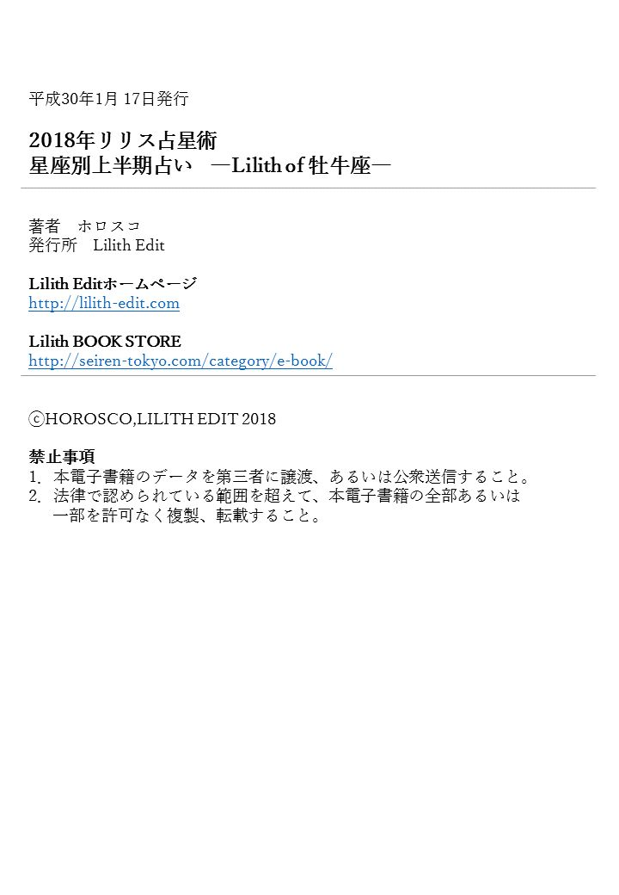

| 2018年リリス占星術 星座別上半期占い ―Lilith of 牡牛座― (Lilith BOOKS) | |
| ホロスコ | |
| Lilith Edit (2018) | |
ホロスコ・Lilith Edit
読者のみなさま、はじめまして、占星術家のホロスコ、と申します。
お気づきかと思いますが「ホロスコープ」のホロスコですよ。いま笑いました！？ そうです、そのままです。
覚えやすいかと思いますので、ぜひお見知りおきを......。
さて、みなさんは《リリス》というものをご存知でしょうか？
占星術では、「月は２つある」とされています。
それは"見える月"と"見えない月"です。
"見える月"は、空を見上げると見ることが出来る例のあの、いわゆる月です。こちらはみなさんもうご存知かと思います。
では、"見えない月"とは何でしょう？
そう、それが《リリス》なんです。《リリス》というのは、月が地球の周りを公転する軌道上で、地球から最も離れている遠地点のことで、ダーク・ムーンとも呼ばれています。
占い好きなみなさんならご存知かと思うのですが、《太陽星座》から読み解ける性質、というのは社会的な側面を象徴しているのに対し、《月星座》は持って生まれた本質的な姿を現す、と言われています。
その本質を司る《月星座》の影で、さらに息をひそめている見えない裏の側面、ダーク・ムーン（リリス）から紐解いていくのが、これから僕がご紹介してい『リリス占い』です。
《リリス》が示すものは、あなたが心の中に隠し持っている、異性に対する性欲、性癖、フェチ的なもの。言うなれば、自分では制御できないほどの強く、根源的な欲望、制御できない自分的フェチポイントともいえるでしょう。
そう、「私の人生ってまさに昼ドラ的だわ」「恋の修羅場の真っ只中に生きている！」そんな風に思える出来事たちは、おそらく、あなたの《リリス》が引き寄せているです。
ちなみにリリスは、アダムの前妻の名前が由来ともいわれています。
「アダムの前妻だと！？ イブ以外にそんな女いたの？」と驚かれる方もいらっしゃるかと思いますが、いたのです。
愛人のご多分に漏れず、これがまたイイ女だったそうで......。
うっかり蛇の口車に乗り、食べちゃいけない知恵の実である林檎をサクッと食べちゃう天然イブちゃんに対し、リリス姐さんは抗えないほどの性的魅力でアダムを骨抜きにした熱く激しい女。
だからこそ、お互いの激情を駆り立て、ふたりは愛憎の中で離れ離れに生きることを選びます。というか姐さんはアダムを振り捨てて《自立した女》としてひとり生きる道を選びます。
ですが、ただ、離れたところで「ハイ、サヨウナラ。」とはいかないからこその《宿命》ですよね。離れたはずのふたりは、お互いを愛を憎悪に変えてえげつないほど呪い合い、多くの犠牲を生むこととなりますが、ついに心が離れることはありませんでした。
激烈に愛し合い、それぞれに激情的な執念で追いかけながらも、ついに穏やかな愛を得られなかった関係、燃え上がるような恋だったけれど結ばれなかった。あなたにも忘れられないそんな"宿命の異性"はいませんか？
いわゆるファム・ファタール、ファム・オム、というやつですね。
無慈悲なことを言うようですが、《リリス》は因縁の相性ということもあり、現実世界で求めても、一般的によくいわれるような"幸せ"とは結びつかない可能性が高いです。
けれど、生の悦びを感じるほどの深い愛、芸術的なまでに昇華された官能の経験を得るには、なくてはならないもの。
また、人の心を捉えて離さないような、真の芸術作品を生み出すには欠かせない、といくらい、そっち方面には効力を発揮するものでもあります。
どうかあなたの《リリス》上手く付き合い、役に立ててみてくださいね。
今年の占いをする前にまず、2017年のリリスの動きについて、おさらいをしておきましょう。
2017年、リリスの動きは、蠍座、射手座、山羊座。
勉強に行き詰まった時、一度机から離れて外の空気を吸って、リフレッシュをして、そしてまた机に戻って勉強を始める......そういったことは、誰しもいろんな場面で経験をしているんじゃないでしょうか？
2017年は恋愛や情愛といったところでそういった動きがありました。
それはただ相手と気持ちを通わせるのではなく、自分自身と気持ちを通わせるようなプロセス。
誰かに出会い、相手を精査し、あらゆる可能性を調べ尽くし、相手の本性を見つける。
それは恋愛において、必ず通る途なのではないかと思います。人を愛しようとするときの醍醐味であるとも言えるかもしれません。
それも2017年の動きは、ただ相手の趣味嗜好、考え方や人格、その生きざまを知ることだけにとどまりませんでした。
相手と言う存在そのものと向き合うこと、その存在が自分の世界にどう位置づけられるのか、または自分が相手の世界の中でどういう存在なのか......そんなことを試行錯誤していくようなプロセスがあったのではないかと思います。
そうして見つけた相手という存在の核心。
それを丁寧に掌の中に収めて、眺める。その上で改めて、その相手に合った自分を作っていくかのような。
理想と現実をすり合わせていき、パートナーとの妥協点が見つかったり、自分の持つものと相手の持つものとの整合性が取れたり。
そうやって丁寧に愛と向き合うのが、2017年のリリスでした。
なんというか、「自分」と「愛」と「相手」という三者について、バランスを取り直すようなことが起こっていたのです。
そんなプロセスを経て、愛と情の世界における自分の役割が、徐々に見えてくる......それが、2017年のリリスの動きでした。
そして自分の立ち位置が明らかになり、目の前が開けてきたかな？ と思った頃、2017年は終わりを迎え、2018年には次なる展開を迎えていきます。
2018年のリリスの動きは、山羊座、そして水瓶座。
人間というのはとても貪欲な生き物です。どうも、ただ生きているだけでは満足できない、というのがこの生物の大きな特徴のよう。
しかし、こういった特徴こそが、今日の文明の礎を作ったとも言えます。
満足を求め続けるこうした姿勢は文化を大いに発展させ、向上させてきました。
しかし、世界に彩りを与えてくれるのは意外と、そういった発展から生まれた「副産物」みたいなものだったりします。
一見して役に立たないようなもの、文化的だとはいえないような、女子高生の会話のようにごちゃごちゃとした言葉や流行り。けれどもそれは、高尚ではなくとも、とても自由で力強く、きらきらとした在り方で輝いています。
2017年に生まれた整合性やパートナーとの関係、自分の立ち位置......そういった、ものは言わば土台。そのプロセスはかつてないほどに、愛や性に関するあなたの土台をしっかりとしてくれたのです。
その土台の上に、個人個人の自由を求めていく......それが2018のリリスの動きです。
その「自由」は例えば、科学技術の最先端・文明の集大成であるスマートフォンを使って日常のくだらない会話をやりとりしたり、面白可笑しいスタンプを送り合ったりするような、副産物としての自由......土台があるからこそ、自由に振る舞える、そんな自由さです。
具体的には、パートナーとの親密さや交流の時間が大きなテーマとなってきそうです。
お互いの個性を尊重できているか、いつまでも側にいてくれる姿勢を保てているか、互いの人生に対し、一定の役割を担っているか......こういった強い気持ちは、いわば相手が自身をつなぎとめてくれている「約束」であります。
この「約束」というものは、お互いの心に「制限」を生み出します。そもそも「自由」というものは「制限」なくして成り立ちません。
例えば、「仕事もせずに好きな時に寝て、好きな時に食べて生活したい」......これでさえも「生きる」という制限があってこそ生まれるものなのです。
2018年は「自由を目的とした制限」といったものを作り上げていく一年となるでしょう。
それは、お互いの関係性や自分の愛について、丁寧に確認した今だからこそできること。
なにをし、なにをしないのか。
この愛はどこへと向かっているのか。
お互いにとって、お互いの存在はなんなのか。
そういった「制限」......または「枠組み」。それは一見窮屈に見えるかもしれませんが、そうして作った大きな世界の中で、生まれる副産物としての自由さ。
それはとてもきらびやかで力強く、豊饒なものになるに違いないのです。
楽しい時間を過ごしていても、気持ちがいまいち乗っていない......
例えば雰囲気の素敵な高級レストランで、恋人とディナーを楽しむ。
その前も後も合わせて、なにもかも充実した、楽しい時間のはずなのに、自分の気持ちはどこか醒めた目でそれを遠くから見ているかのような感じ。
そんな時ってないでしょうか？
2018年、牡牛座にリリスを持つ人は、自分の過ごす時間についてそんな印象を受けることが多そうです。
この時期はあなたにとって、物事がいろいろと動きだす時期のはず。
そのためか、自分が気にすること、考えることも増えそう。
性欲などは二の次三の次になってしまうことがありそうなのです。
ところが、というか、だからこそというべきか、いざ恋人と二人きりの時間になってみると、いつも以上にその時間がいとおしく感じられるかも。
セックスもいつも以上に感じてしまうかもしれません。
心にかかることがたくさんあって気もそぞろだから、それを気にせずにいられるような状況になると、抑えていたものが盛り上がってしまうのでしょうか。
一方で、そうして盛り上がったあとはさっぱりと元の感じに戻ってしまったりもします。
2018年上半期は、そんな忙しさとの間で、相手を求める気持ちがゆらゆら動く時期。タイミングがなかなか合わないようなことが起きやすいです。
でも、気にすることが多い分、感覚は鋭くなっているはず。いつも以上に、様々な刺激を受けてそれに身体が反応していくようなことが起こっていくでしょう。
相手との気持ちが繋がりやすい月。
この時期はどこか相手に対して「開いている」感覚が強いみたいです。
そしてそれは相手も同じ。きっとお互いに、満足を得られるコミュニケーションができる時期になることでしょう。
多少大胆な、思い切ったアプローチでもこの時期は受け止めてもらえそうです。
ですからまずは、自分から動き出すことが運気を開くきっかけになります。
少しくらい強引でも構いません。
むしろその方が、よい流れを作り出すことができるでしょう。
「愛のままにわがままに」ですよ。
1月までとは打って変わって、すれ違いが生まれやすい月です。
こちらのアプローチに対して、それがうまく伝わらなかったり、または相手の言うことを素直に受け止めることができなかったり。
お互い、相手に対して開いている状態なのは確かなのですが、プラグがずれているかのような、ボタンをかけ違えているかのような、まさに「すれ違い」というような出来事が次第に多くなってきます。
パートナーとの関係の中でも、不満に思えることが際立ってくるかも......
すれ違っている時というのは、どうしても丁寧に説明したり、なんとか話をしようとしたりしがち。もちろんそれが有効な時もあるのですが、どうもこの時期はそれもあまり上手くいかなそうな気配があります。
むしろ、どうにもならないことは潔く諦めるスタンスの方が上手くいくかも。
丁寧にコミュニケーションを取るばかりが解決策ではありません。
放置していたら自然と解決する、というようなことも多くあります。
だからこの時期は、あまり考えすぎず、なんとかなるくらいの楽観的な気持ちを大切にしていきましょう。
そんな風にして、すれ違いながらも過ごしてきた時間が、3月中旬からはだんだんと良い流れを感じられるようになっていきます。
自分が受け入れられている、と感じる時っていろいろあると思うんですが、自分のわがまま、「こうしたい」という欲求、エゴといったようなものが周囲に伝わり、自然とその援護をしてくれるような時というのがあります。
誰かが渋々とわがままを聞いてくれる、というようなことではなくて、周りのみんなが率先して自分の考えや行動を後押ししてくれる。
それは、ひとりに対して受け容れられるよりも、より大きく自己肯定感を感じられる出来事かもしれません。
この時期の「良い流れ」がまさにそれ。
あなたが自分らしく生きるために、環境が味方についてくれそうなのです。
相手に気持ちが伝わりやすく、パートナーとの間にあるルールみたいなものが改正されるような暗示もあります。
もしかしたらこれまで不満に感じていたことについて、周囲を味方につけて関係性を捉えなおす、といったことがあるのかも。
この時期は思い切って、部屋の模様替えなどを行って「環境」を変えてあげるとさらにいいでしょう。
気持ちを入れ替えることがカギです。
不満が溜まりやすく、イライラすることが多いかもしれません。
どうも2018年上半期は安定しないな、という印象を受ける方も多いでしょう。
ですが、それが最初にお話しした「心にかかることが多くあり、気持ちが乗らないことが多そう」という、この時期の牡牛座のリリスの特徴なのです。
確かに環境は良くなっているはずなのですが、こちらが頑張ってみたことについて、完全な手応えが返ってくるというのはそもそも、とても稀なこと。
手応えが感じられずにイライラする気持ちはわかりますが、おおらかな気持ちで状況を受け流すことも必要です。
そしてこの時期、このイライラはパートナーへと向かいやすいようです。
もしかしたら、些細な事で喧嘩してしまうようなこともあるかもしれません。
そんなときは、"頑張り過ぎない、相手に求めない"とおまじないのように唱えてみて下さい。
あなたのイライラの源泉はどうも、「自分がこんなに頑張っているのに」という気持にあるようなのです。
人はどうしても、頑張ったことに対する成果や見返りを求めてしまうもの。
ですから、この時期は「見返りは無いもの」と割り切って、相手から求めることよりも、相手に与えることに意識を向けると良いでしょう。
